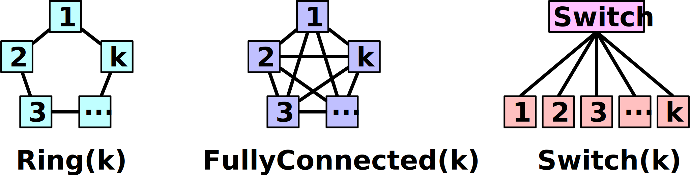
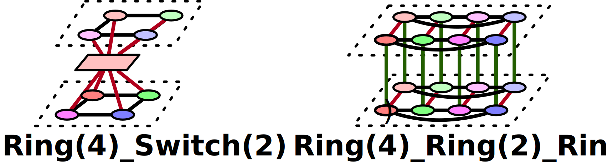

Topology
topology field captures the shape of the network one wants to model or simulate.
Basic Network Building Blocks
Analytical network simulator supports 3 basic network building blocks.
Ring
FullyConnected
Switch
Below image visualizes the shape of basic network building blocks.

Below is an example 1D Switch topology.
topology: [ Switch ]
Multi-dimensional Network Topology
By stacking up multiple network building blocks, one can also represent multi-dimensional network topologies.
Below image visualizes sample 2D and 3D topologies.

Above samples can be captured as below in the .yml input format.
topology: [ Ring, Switch ] # 2D topology
topology: [ Ring, Ring, Ring ] # 3D topology